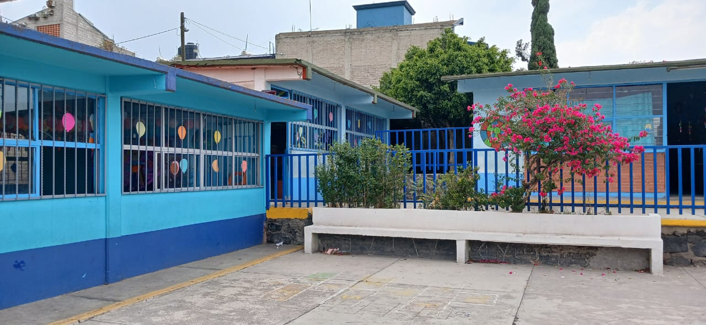
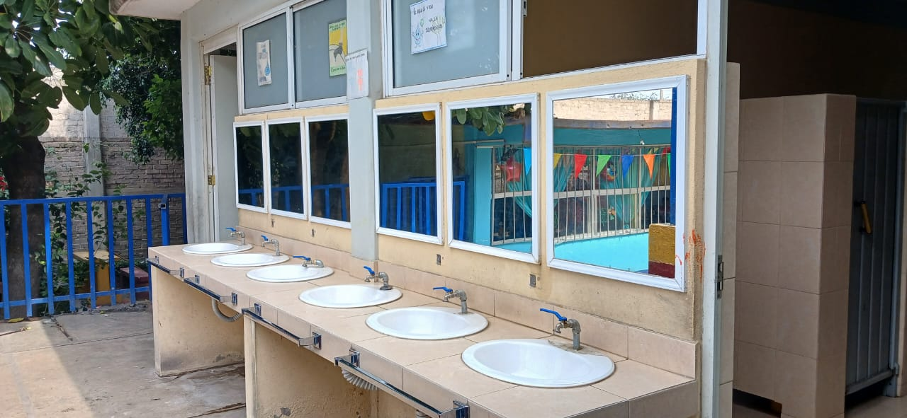
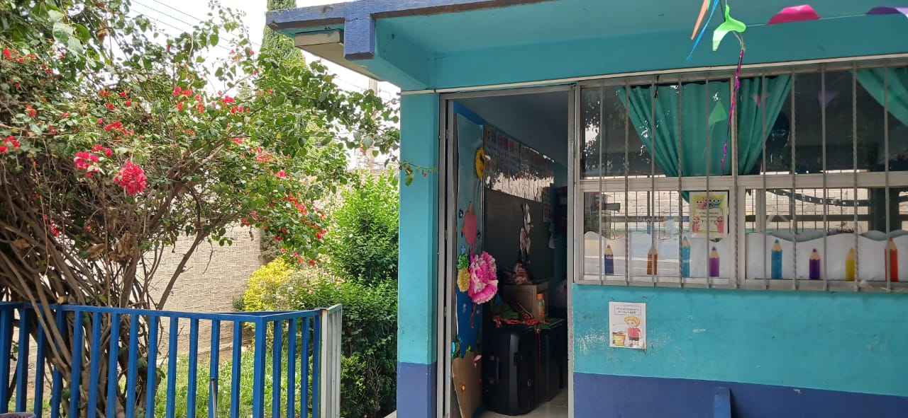
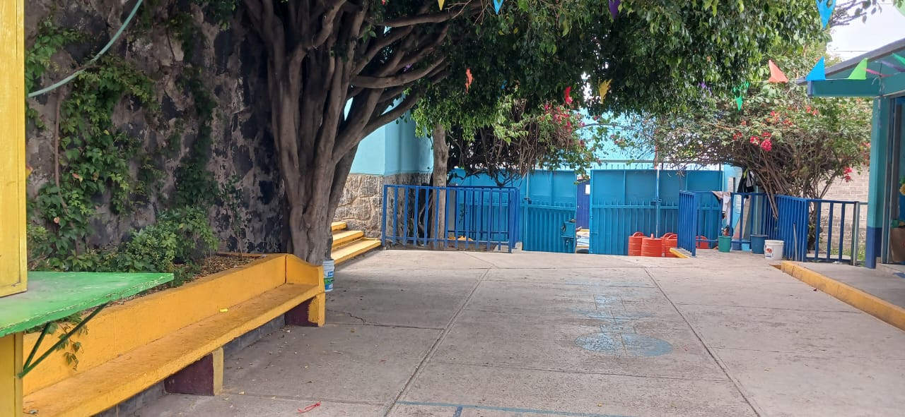

ESCUELA PRIMARIA “FRANCISCO VILLA"
TURNO VESPERTINO CCT 15EPR4419T
La Escuela Primaria Francisco Villa Turno Vespertino es una institución educativa
ubicada en insurgentes no. 13 Santa Catarina Ayotzingo Chalco, Estado de México C.P 56623
Somos una escuela pública de educación básica con un enfoque en primaria
Nos ubicamos en una zona semi urbana, tenemos aproximadamente 350 alumnos inscritos cada ciclo escolar, con 14 excelentes profesores,
enfocados en la educacion de cada uno de los alumnos, nuestras 12 aulas se encuentran en perfectas condiciones para el uso de todos los alumnos y padres de familia.

CONTACTOS
NUMERO DE TELEFONO
5516436297
CORREO INSTITUCIONAL
15epr4419t@dgeb.gob.mx
MISIÓN
La Escuela Primaria Francisco Villa tiene como misión proporcionar una educación integral y de calidad, que fomente el desarrollo académico, social y emocional de nuestros estudiantes. Nos comprometemos a formar individuos críticos, creativos y responsables, capaces de contribuir positivamente a su comunidad y al mundo.
VISIÓN
Nuestra visión es ser una institución educativa líder, reconocida por su excelencia académica y su compromiso con la formación de ciudadanos éticos y comprometidos con la sociedad. Aspiramos a crear un ambiente inclusivo y estimulante donde cada estudiante pueda alcanzar su máximo potencial y prepararse para los desafíos del futuro


ACUERDOS DE CONVIVENCIA
Reglamento Escolar de la Escuela Primaria Francisco Villa
Normas Generales
1. El horario escolar es de 13:30 a 18:00 horas puntualidad en la entrada y salida.
2. El uniforme escolar es obligatorio y debe mantenerse limpio y en buen estado.
3. Los alumnos deben traer sus materiales completos y cuidar sus pertenencias.
4. Está prohibido el uso de dispositivos electrónicos personales durante clases.
5. No se permite la venta de productos dentro de la institución sin autorización.
6. Se debe mantener el orden y la limpieza en aulas, pasillos y áreas comunes.
REGLAMENTO ESCOLAR
Respeto:
Valorar y respetar las diferencias entre compañeros y docentes.
Inclusión:
Brindar apoyo a quienes lo necesiten y evitar discriminación.
Compromiso:
Esforzarse en el aprendizaje y mantener una actitud positiva.
Cuidado del entorno:
Mantener la escuela limpia y cuidar materiales y mobiliario.
Comunicación:
Resolver conflictos de manera pacífica, expresando sentimientos y opiniones con respeto.

DIRECCIÓN INSURGENTES NO. 13 SANTA CATARINA AYOTZINGO CHALCO, ESTADO DE MÉXICO C.P 56623
NUMERO DE TELEFONO 5516436297
CORREO 15epr4419t@dgeb.gob.mx